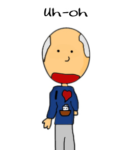

Dan Brown. The book in question was "The Da Vinci Code", which was not only a best seller but a highly successful film. Perdue felt that the distribution of these should be blocked. However, he lost in court. The presiding judge said "The average lay observer would not conclude that "The Da Vinci Code" is substantially similar to "Daughter of God". Any slightly similar elements are on the level of generalised or otherwise unprotectable ideas."
George Harrison. The case (filed Feb. 10, 1971) involving the plagiarism of The Chiffon's song "He's So Fine" by George Harrison in his song "My Sweet Lord" took years to resolve. Allegations centered on the similarity of the melody between the songs. Eventually, judgment was awarded by the court in favor of Bright Tunes Music Corporation, which owned the rights to the song. BELIEVE IT OR NOT - George Harrison's one time manager and advisor for the first phase of the plagiarism case was Allen Klein. After that first phase of the case was concluded Klein purchased Bright Tunes Music Corporation thereby becoming the plaintiff in the case! The final judgment in the case was that Harrison would purchase Bright Tunes Music Corporation from Klein for $587,000. However, this judgment was contested by Harrison, which resulted in ten more years of litigation with the end result being that the decision was upheld. A BIZARRE FOOTNOTE - In an effort to cash in on the notoriety of the plagiarism case the Chiffons recorded a rendition of "My Sweet Lord" in 1975.